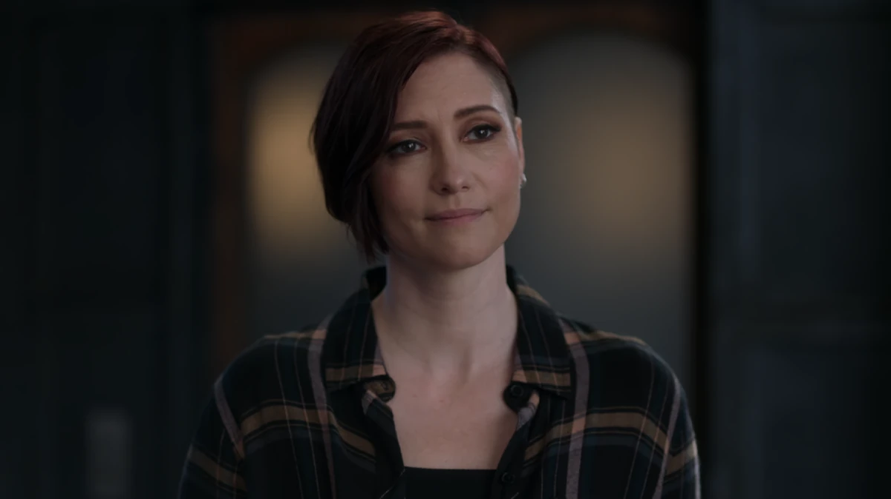

SuperGirl
Sobre:
SuperGirl é prima de SuperMan, seu nome verdadeiro é Kara Zor-El, é originária do planeta Krypton. Ela é filha de Alura In-Ze e Zor-El, irmão de Jor-El, o pai de Kal-El. A história de Supergirl geralmente gira em torno de sua adaptação ao novo planeta, seus desafios ao lidar com o fato de ser uma refugiada de Krypton e a busca por seu lugar no mundo, ao mesmo tempo em que assume uma postura heroica ao lado de Superman.
Poderes:
Ela possui uma força sobre-humana, capaz de levantar grandes quantidades de peso e derrotar inimigos muito poderosos. Ela também possui supervelocidade, voo, visão de raio-x e visão de calor, invulnerabilidade (sua pele é extremamente resistente, tornando-a praticamente imune a danos físicos), sopro congelante e fisiologia kryptoniana (a exposição à radiação solar amarela da Terra faz com que ela tenha todas essas habilidades, assim como Superman).
Características:
Kara Zor-El é uma heroína forte, determinada e corajosa. Ela tem um forte senso de justiça, mas também passa por dificuldades emocionais, principalmente por ter perdido sua família em Krypton e ter que se adaptar à nova vida na Terra. Supergirl tem cabelos loiros e olhos azuis, usando um traje vermelho e azul, similar ao de Superman, mas com uma saia e uma capa. Sua roupa é emblemática, com o "S" em um escudo no peito, representando a herança de Krypton.
Aliados
J'onn J'onzz - Caçador de Marte

É um marciano e um dos membros fundadores da Liga da Justiça. Ele é mentor e tio de Miss Marte.
Alex Danvers/Sentinela
É uma bioengenheira e a antiga diretora do D.O.E.. Ela é a filha de Eliza Danvers e do falecido Jeremiah Danvers. SuperGirlé sua irmã adotiva. Alex se tornou uma guardiã e aliada de sua irmã com o passar dos tempos.
Nia Nal/Sonhadora
É uma híbrida humana-naltorina, uma repórter na CatCo Mídia Internacional e ex-redatora de discursos políticos. Depois da morte de sua mãe, Nia abraçou seus poderes e se tornou a super-heroína conhecida como Sonhadora.
Querl Dox/Brainiac-5
É um coluano e antigo membro da Legião dos Super-Heróis. Ele é o namorado de Nia Nal e um amigo próximo de Kara Danvers, J'onn J'onzz, Alex Danvers, Lena Luthor e Kelly Olsen. Ele é um ser de intelecto nível 12 e um grande cientista e estrategista.
Kelly Olsen/Guardiã
É uma psicóloga brilhante especializada em trauma e ex-soldado do Exército dos EUA. Cansada de ver a comunidade sendo ignorada, Kelly decidiu lutar por eles e se tornou a Guardiã.
Lena Luthor
É uma empresária bilionária, filantropista e a antiga proprietária da CatCo Mídia Internacional.
Vilões
Lex Luthor

Lex voltou sua atenção para a prima do Homem de Aço: Supergirl. Depois de entrar em um conflito com a heroína e seus Superamigos, Lex, eventualmente, foi morto por sua própria irmã adotiva, Lena
Gorila Grodd
É um gorila telepático hiperinteligente capaz de controlar as mentes dos outros. Ele e outros gorilas ganharam sapiência e poderes psíquicos depois que uma nave alienígena caiu em sua área.
Antimonitor
É um ser de poder supremo e malevolência que embarcou em uma missão para erradicar o multiverso por quaisquer meios necessários. Apesar de ser combatido por sua contraparte, Mar Novu , ele finalmente teve sucesso graças ao uso de sua invenção, o canhão de antimatéria .